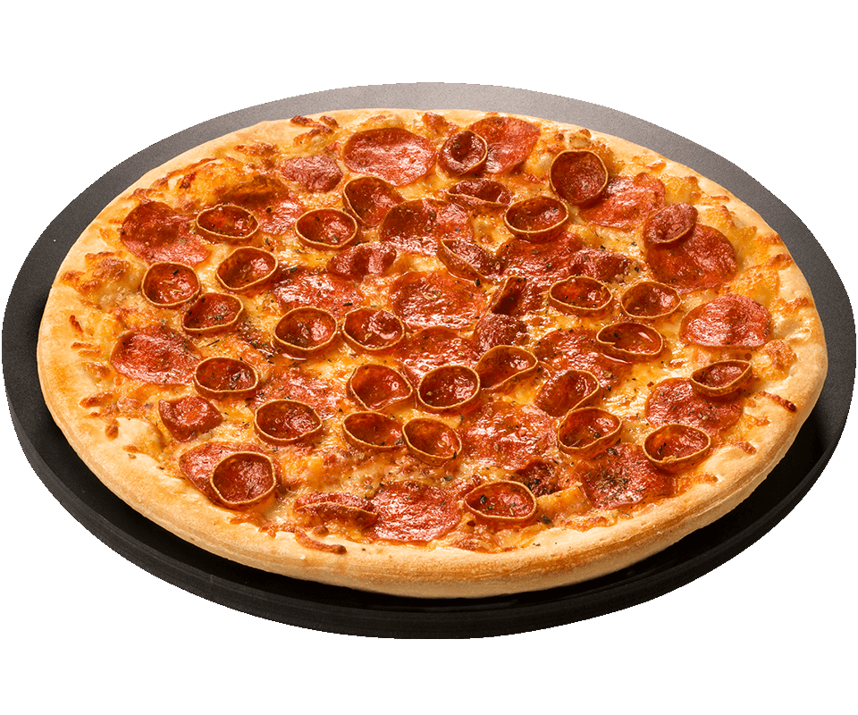
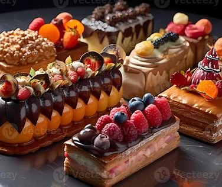

 While the classic American pepperoni pizza is well-loved worldwide, it doesn’t make its appearance in traditional Italian pizzerias. If you’re anticipating biting into a slice of pepperoni pizza in Italy, you might be in for a surprise, unless you want to eat a pizza with bell peppers. Key Takeaways: In Italy, you won’t find the U.S.-style pepperoni pizza, but try the “pizza alla diavola” for a similar taste – you’ll love it! Pepperoni, as Americans know it, came from Italian immigrants in the U.S.; you won’t find this exact salami in Italy. Fun fact: “Peperoni” in Italian means bell peppers, not the spicy meat we’re used to on pizzas!On the left is a Pepperoni Pizza. On the right is a Pizza alla Diavola (Pizza with Spicy Salami). As you can see Italian spicy salami is distinguishable from pepperoni, it has a less clear-cut and precise shape. Before you feel too disappointed, let’s understand why and find out how you can still enjoy a pizza reminiscent of the beloved pepperoni flavor.These are the spicy salamis you’ll find sliced on your pizza alla diavola; in fact, it’s the closest thing to a pepperoni salami. A kind of “Italian pepperoni”. Remember that the pizza you get will likely be thinner and lighter pizza than the classic American pizza. Why Can’t You Find Pepperoni Pizza in Italy? The mystery behind the absence of pepperoni pizza in Italy lies in the main ingredient. You might wonder, “Is pepperoni Italian?” The truth is, pepperoni salami isn’t an authentic Italian cured meat. Instead, its roots trace back to the U.S., likely emerging in the late 1800s. Comparative Table: American Pepperoni vs. Italian Spicy Salami Feature American Pepperoni Italian Spicy Salami Origin USA and Canada Italy Date of Invention Late 1800s/Early 1900s Ancient times Main Ingredients Pork and beef Varies, often just pork Texture Soft Varies, typically firmer Spiciness Level Mildly spicy Typically very spicy Smoked Yes Rarely Grain Fine Varies, often thicker Color Bright red Can vary, often less bright Note: While American pepperoni has a specific formulation, Italian spicy salami can greatly vary from one region to another or between producers in Italy. Many of the foods you associate with Italy, such as the pepperoni pizza, stem from Italian immigrants adapting their recipes using local American ingredients. The term “pepperoni” in Italian translates to “bell peppers” and is written peperoni with just one “p”. Thus what we called peperoncino here in Italy, translated into English with small peppers, for mispronunciation came to be called pepperoni in America. Linguistic mix-ups between Italian immigrants and their new American neighbors led to the birth of the pepperoni salami we know today. So, when you ponder “is there pepperoni in Italy?,” remember it’s an American twist on Italian flavors. Now, while you won’t find a pizza labeled “pepperoni pizza” in Italian, you can always savor the spicy and delicious “diavola pizza” and make your own thoughts about “diavola pizza vs pepperoni.” The experience might even introduce you to a new favorite! From Pepperoni to Diavola: Italy’s Spicy Pizza Deception! But if you are in Italy, precisely in a local ristorante or pizzeria, how to order a pepperoni pizza from the waiter? Even if pepperoni doesn’t exist in Italy you can still have a very comparable pizza, just ask for a “pizza con salame piccante” or ask for a “pizza alla diavola” with tomato, mozzarella, spicy salami, and added pepper. And you will see that you will be served a pizza quite similar to the pepperoni pizza you are used to eating, maybe even better! And if you’re unsure whether to eat it with your hands or utensils, check out the link. Do we eat Pepperoni Salami in Italy? No, in Italy we do not eat pepperoni, mainly because importing it is not convenient and in fact, it is not found for sale. Then in Italy, we make several pepperoni-like cured meats, which we also use to season diavola pizza, which is quite similar to pepperoni pizza. What Salami do Italians put on Pizza? So many pizza recipes in Italy call for the use of sausages and cured meats as toppings. If you like American pepperoni pizza, then in Italy you should try these pizzas, all of which have some kind of cured meat on top: Pizza alla diavola: with hot salami, pepper and mozzarella cheese. Pizza capricciosa: with mozzarella, mushrooms, ham, olives and artichokes. Pizza boscaiola: with mozzarella, champignon mushrooms and sausage. Pizza salsiccia e friarielli: with sausages, smoked provolone, chili and garlic
 Pastry refers to a variety of doughs (often enriched with fat or eggs), as well as the sweet and savoury baked goods made from them.[1][2][3] The dough may be accordingly called pastry dough for clarity.[4] Sweetened pastries are often described as bakers' confectionery. Common pastry dishes include pies, tarts, quiches, croissants, and pasties.[5][6] The French word pâtisserie is also used in English (with or without the accent) for many of the same foods, as well as the set of techniques used to make them. Originally, the French word pastisserie referred to anything, such as a meat pie, made in dough (paste, later pâte) and not typically a luxurious or sweet product.[7] This meaning still persisted in the nineteenth century, though by then the term more often referred to the sweet and often ornate confections implied today. Definitions The precise definition of the term pastry varies based on location and culture.[1] Common doughs used to make pastries include filo dough, puff pastry, choux pastry, short dough, pâte brisée, pâte sucrée, and other enriched doughs.[1][2][8] Pastries tend to have a delicate texture, often flaky or crumbly, and rich flavor[9][10]—simple breads are thus excluded from the pastry category. Pastries also tend to be baked.[11] A French pastry shop display Pastry chef with croquembouche Swedish cinnamon rolls Croissants Pastry bag or piping bag A disposable or reusable bag that is often cone-shaped, used to make an even stream of dough, frosting, or flavored substance to form a structure, decorate a baked item, or fill a pastry with a custard, cream, jelly, or other filling. Pastry board A square or oblong board, preferably marble but usually wood, on which pastry is flattened. Pastry brake Opposed and counter-rotating rollers with a variable gap through which pastry can be worked and reduced in thickness for commercial production. A small version is used domestically for pasta production. Pastry case An uncooked or blind baked pastry container that is used to hold savory or sweet mixtures. Pastry cream Confectioner's custard. An egg- and flour-thickened custard made with sweetened milk flavored with vanilla. It is traditionally used as a filling for flans, cakes, pastries, tarts, etc. The flour prevents the egg from curdling. Pastry cutters Various metal or plastic outlines of shapes, e.g. circles, fluted circles, diamonds, gingerbread men, etc., sharpened on one or both sides and used to cut out corresponding shapes from biscuit, scone, pastry, or cake mixtures.[12] Pastry blender A kitchen implement used to chop the fat into the flour, which prevents the melting of the fat with body heat from fingers, and improves control of the size of the fat chunks. Usually constructed of wire or plastic, with multiple wires or small blades connected to a handle. Viennoiserie French term for "Viennese pastry", which, although it technically should be yeast raised,[13] is now commonly used as a term for many laminated and puff- and choux-based pastries, including croissants, brioche, and pain au chocolat.[14] The European tradition of pastry-making is often traced back to the shortcrust era of flaky doughs that were in use throughout the Mediterranean in ancient times. In the ancient Mediterranean, the Romans, Greeks, and Phoenicians all had filo-style pastries in their culinary traditions. In the plays of Aristophanes, written in the 5th century BC, there is mention of sweetmeats, including small pastries filled with fruit. Roman cuisine used flour, oil, and water to make pastries that were used to cover meats and fowls during baking in order to keep in the juices, but the pastry was not meant to be eaten. A pastry that was meant to be eaten was a richer pastry that was made into small pastries containing eggs or little birds and that were often served at banquets. Greeks and Romans both struggled in making a good pastry because they used oil in the cooking process, and oil causes the pastry to lose its stiffness.[15] In the medieval cuisine of Northern Europe, pastry chefs were able to produce nice, stiff pastries because they cooked with shortening and butter. Some incomplete lists of ingredients have been found in medieval cookbooks, but no full, detailed versions. There were stiff, empty pastries called coffins or 'huff paste', that were eaten by servants only and included an egg yolk glaze to help make them more enjoyable to consume. Medieval pastries also included small tarts to add richness. It was not until about the mid-16th century that actual pastry recipes began appearing.[16][17] These recipes were adopted and adapted over time in various European countries, resulting in the myriad pastry traditions known to the region, from Portuguese "pastéis de nata" in the west to Russian "pirozhki" in the east. The use of chocolate in pastry-making in the west, so commonplace today, arose only after Spanish and Portuguese traders brought chocolate to Europe from the New World starting in the 16th century. Many culinary historians consider French pastry chef Antonin Carême (1784–1833) to have been the first great master of pastry making in modern times. Pastry-making has a strong tradition in many parts of Asia. Chinese pastry is made from rice, or different types of flour, with fruit, sweet bean paste or sesame-based fillings. The mooncakes are part of Chinese Mid Autumn Festival traditions, while cha siu bao, steamed or baked pork buns, are a regular savory dim sum menu item. In the 19th century, the British brought western-style pastry to the Far East, though it would be the French-influenced Maxim in the 1950s that made western pastry popular in Chinese-speaking regions starting with Hong Kong. The term "western cake" (西餅) is used to refer to western pastry, otherwise Chinese pastry is assumed. Other Asian countries such as Korea prepare traditional pastry-confections such as tteok, hangwa, and yaksik with flour, rice, fruits, and regional specific ingredients to make unique desserts. Japan also has specialized pastry-confections better known as mochi and manjū. Pastry-confections that originate in Asia are clearly distinct from those that originate in the west, which are generally much sweeter. Types Main article: List of pastries Shortcrust pastry Shortcrust pastry is the simplest and most common pastry. It is made with flour, fat, butter, salt, and water to bind the dough.[18] Pâte brisée is the French version of classic pie or tart shortcrust pastry.[19] The process of making pastry includes mixing of the fat and flour, adding water, chilling and then rolling out the dough. Chilling before rolling is essential since it enables the fat (lard, butter, etc.) to harden again and thus create flaky layers in the dough. It also allows for even hydration and inhibits gluten formation. It results in a tender flaky pastry.[20] The fat is mixed with the flour first, generally by rubbing with fingers or a pastry blender, which inhibits gluten formation by coating the gluten strands in fat and results in a short (as in crumbly; hence the term shortcrust), tender pastry.[21] A related type is the sweetened sweetcrust pastry, also known as pâte sucrée, in which sugar and egg yolks have been added (rather than water) to bind the pastry.[22] Flaky pastry Flaky pastry is a simple pastry that expands when cooked due to the number of layers. It bakes into a crisp, buttery pastry. The "puff" is obtained by the shard-like layers of fat, most often butter or shortening, creating layers which expand in the heat of the oven when baked. Puff pastry Puff pastry has many layers that cause it to expand or "puff" when baked. Puff pastry is made using a laminated dough consisting of flour, butter, salt, and water. The pastry rises up due to the water and fats expanding as they turn into steam upon heating.[23] Puff pastry come out of the oven light, flaky, and tender. Choux pastry Choux pastry is a very light pastry that is often filled with cream. Unlike other types of pastry, choux is in fact closer to a dough before being cooked which gives it the ability to be piped into various shapes such as the éclair and profiterole. Its name originates from the French choux, meaning cabbage, owing to its rough cabbage-like shape after cooking.[24] Choux begins as a mixture of milk or water and butter which are heated together until the butter melts, to which flour is added to form a dough. Eggs are then beaten into the dough to further enrich it. This high percentage of water causes the pastry to expand into a light, hollow pastry. Initially, the water in the dough turns to steam in the oven and causes the pastry to rise; then the starch in the flour gelatinizes, thereby solidifying the pastry.[25] Once the choux dough has expanded, it is taken out of the oven; a hole is made in it to let out the steam. The pastry is then placed back in the oven to dry out and become crisp. The pastry is filled with various flavors of cream and is often topped with chocolate. Choux pastries can also be filled with ingredients such as cheese, tuna, or chicken to be used as appetizers. Phyllo (Filo) Phyllo is a paper-thin pastry dough that is used in many layers. The phyllo is generally wrapped around a filling and brushed with butter before baking. These pastries are very delicate and flaky.[26] Hot water crust pastry Hot water crust pastry is used for savoury pies, such as pork pies, game pies and, more rarely, steak and kidney pies. Hot water crust is traditionally used for making hand-raised pies. The usual ingredients are hot water, lard, and flour. The pastry is made by heating water into which the fat is then melted, before bringing to the boil, and finally mixing with the flour. It can be done by beating the flour into the mixture in the pan, or by kneading on a pastry board. Either way, the result is a hot and rather sticky paste that can be used for hand-raising: shaping by hand, sometimes using a dish or bowl as an inner mould. As the crust cools, its shape is largely retained, and it is filled and covered with a crust, ready for baking. Hand-raised hot water crust pastry does not produce a neat and uniform finish, as there will be sagging during the cooking of the filled pie, which is generally accepted as the mark of a hand-made pie.[27] Chemistry Different kinds of pastry doughs are made by utilizing the natural characteristics of wheat flour and certain fats. When wheat flour is mixed with water and kneaded into plain dough, it develops strands of gluten, which are what make bread tough and elastic. In a typical pastry, however, this toughness is unwanted, so fat or oil is added to slow down the development of gluten. Pastry flour can also be used, since it typically has a lower level of protein than all-purpose or bread flours.[28] Lard or suet work well because they have a coarse, crystalline structure that is very effective. Using unclarified butter does not work well because of its water content; clarified butter, or ghee, which is virtually water-free, is better, but shortcrust pastry using only butter may develop an inferior texture. If the fat is melted with hot water or if liquid oil is used, the thin oily layer between the grains offers less of an obstacle to gluten formation and the resulting pastry is tougher.[16] A good pastry is light and airy and fatty, but firm enough to support the weight of the filling. When making a shortcrust pastry, care must be taken to blend the fat and flour thoroughly before adding any liquid---to ensure that the flour granules are adequately coated with fat and less likely to develop gluten. On the other hand, overmixing results in long gluten strands that toughen the pastry. In other types of pastry such as Danish pastry and croissants, the characteristic flaky texture is achieved by repeatedly rolling out a dough similar to yeast bread dough, spreading it with butter, and folding it to produce many thin layers. Pastry chefs See also: List of pastry chefs Pastry chefs use a combination of culinary ability and creativity for baking, decoration, and flavoring with ingredients. Many baked goods require a lot of time and focus. Presentation is an important aspect of pastry and dessert preparation. The job is often physically demanding, requiring attention to detail and long hours.[29] Pastry chefs are also responsible for creating new recipes to put on the menu, and they work in restaurants, bistros, large hotels, casinos and bakeries. Pastry baking is usually done in an area slightly separate from the main kitchen. This section of the kitchen is in charge of making pastries, desserts, and other baked goods.[30]